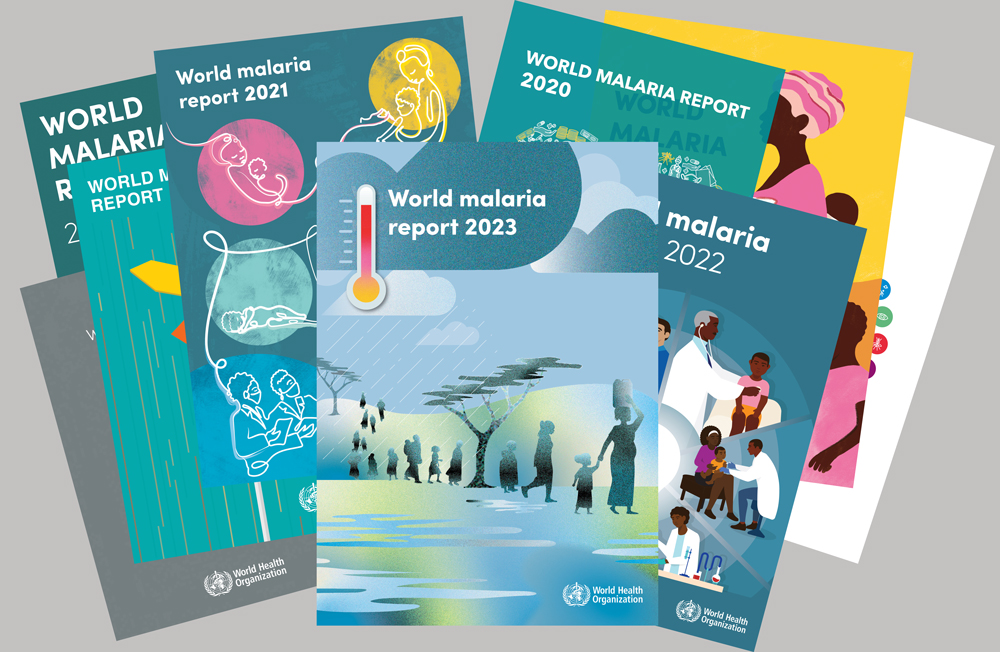
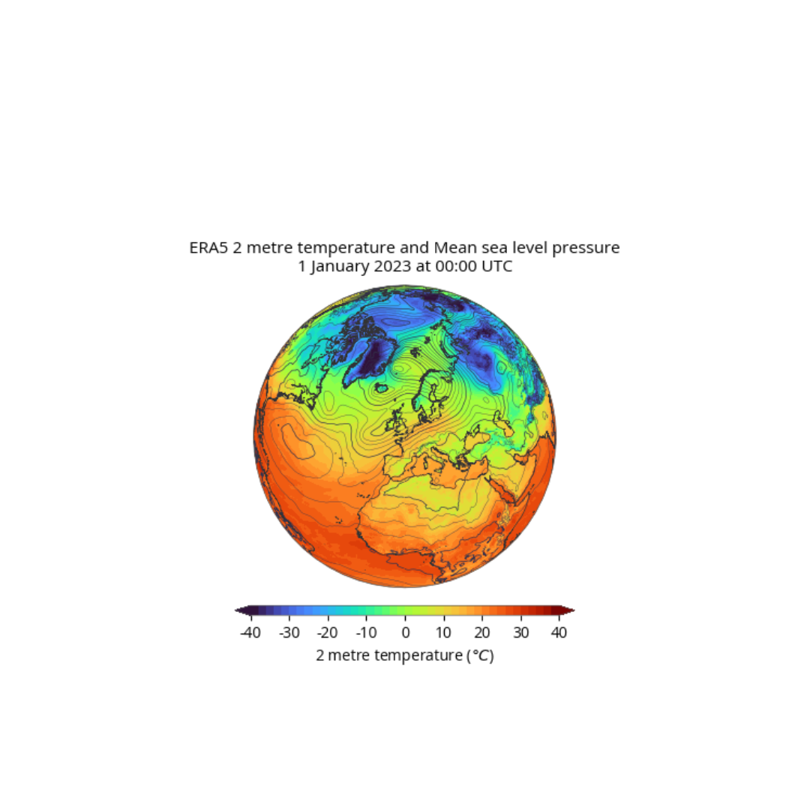
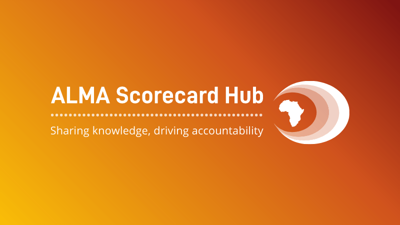
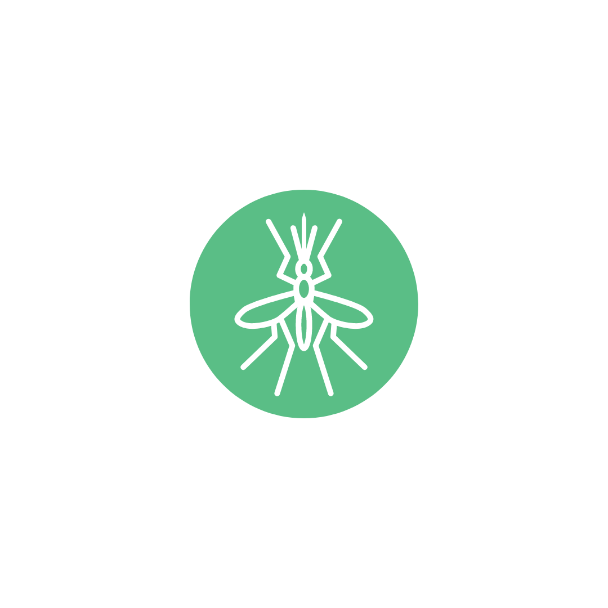
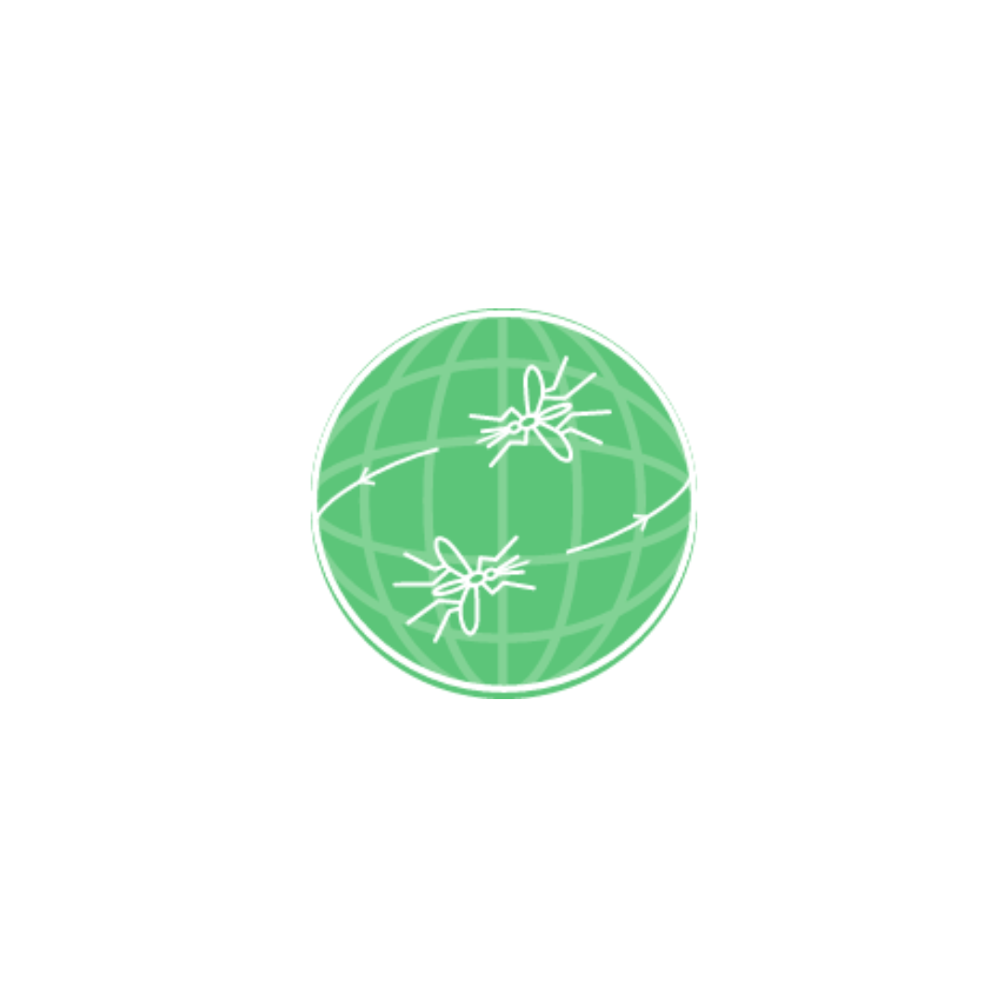

World Malaria Report
The report provides a comprehensive and up-to-date assessment of trends in malaria control and elimination across the globe.
Browse and search for data sources

The report provides a comprehensive and up-to-date assessment of trends in malaria control and elimination across the globe.
The Demographic and Health Surveys (DHS) Program has collected population survey data from over 90 countries for over 30 years.

ERA5 hourly data on single levels from 1940 to present
The Malaria Atlas Project (MAP) is a leading global resource that compiles and analyses spatial data on malaria transmission and prevalence.
The global database on antimalarial drug efficacy and resistance, established in 2000, tracks drug efficacy in malaria-endemic countries.

This is a digital platform developed by the African Leaders Malaria Alliance (ALMA) to track and support progress towards malaria elimination.

Established in 2014, the global insecticide resistance database tracks insecticide resistance in malaria vectors.
The Institute for Health Metrics and Evaluation (IHME) works with collaborators around the world to develop timely, relevant, and scientifically valid evidence that illuminates the state of health everywhere.

WHO Global database on invasive mosquito vector species. At present, the database contains data on detection of *Anopheles stephensi* outside of its native ecosystems.
Provides estimates and long and short term projections of demographic indicators
UNICEF DATA - Child Statistics provides detailed information on malaria's impact on children, including prevalence, treatment coverage, and mortality rates.